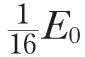
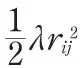
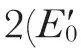
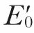
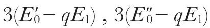
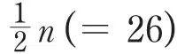
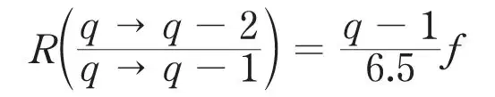

中文
中文R. H. Fowler
Editor’s Note
By the 1930s, physicists believed they had a fair understanding of the structure of the atomic nucleus. Its mass was considered to be due to the number of protons it contained, while some of their charge was thought to be offset by the presence of negatively charged electrons involved in β-decay. But even so, it was not clear how so many protons, repelling one another, could be stably packed into so small a space. Here physicist Ralph Fowler suggests an explanation for the stability of nuclei which relies on the observation that radioactive atoms may emit α-particles. The real explanation invokes another nuclear particle, the neutron, not discovered until 1932. 中文
IN their recent paper,1 Lord Rutherford and Dr. Ellis have shown how the numerous γ-rays of radium C' can be arranged in a simple and orderly manner, which suggests, as they point out, that the multiplicity of the γ-rays is largely due to the excitation of several α-particles into the same excited level rather than to the excitation of one α-particle into several excited levels. Their arrangement of the lines of radium C' is probably not a unique scheme of this sort, but any reasonable scheme appears likely (they show) to present the same general features. 中文
It seems desirable therefore to investigate theoretically in detail any simple model or models of a nucleus consisting of some fifty α-particles, which might show such general features. The main feature brought out by Rutherford and Ellis is that the γ-rays can be expressed in the form
hv = pE0 － qE1,
where p is an integer running from 1 to 4 and q an integer running from 0 up to perhaps 10; the value of E1 is about

for radium C' and has much the same value for radium B. For radium C' more than one value of E0 may be required. 中文
There are two models which might be investigated with some chance of success; the first is a model in which each α-particle is considered to move independently in a central field (which is ultimately to be referred to the combined interactions with the other α-particles), but the whole family is affected by perturbing interactions of the form V(rij), between each pair i, j of all the α-particles, where rij is the distance between the α-particles i and j. Such a model is very like an atom of electrons, except that wave functions have to be symmetrical in the α-particles instead of antisymmetrical in the electrons, and this is the essential difference which allows of the states of reduplicated excitation, which do not occur at all in atoms. This model can be still further simplified from a three-dimensional to a one-dimensional form for a first discussion. 中文
The second model is one in which each pair i, j of α-particles act on one another with a potential energy

. This model is obviously a rather poor physical approximation to the type of force, but it has the advantage that it can be studied exactly and not merely by the approximations of a perturbation method. A discussion of both these models has been begun, but has as yet only been carried through for the first model simplified to one dimension. 中文
Confining attention only to the most general features, likely to be true of any suitable similar model, the following results have been obtained, which are to a large extent in excellent accord with the scheme of Rutherford and Ellis, but also seem to indicate clearly that a rather more elaborate scheme should be adopted. The energy levels of the model which arise from excitation of more than one α-particle into a single excited state are of such a configuration that the corresponding γ-rays (if they could all be emitted) would be approximately of the frequencies
hv = p(E0 － qE1)
These frequencies agree with those of the proposed scheme of Rutherford and Ellis if the scheme is only very slightly modified, so that in place of the proposed single set of γ-rays of frequencies 2E0 – qE1, we have the double set of frequencies 2(E0 – qE1) and

– qE1) with E0 and
nearly equal, and in place of the single set 3E0 – qE1, the triple set 3(E0 –qE1),
and so on. It is, moreover, clear that the reduplication of the upper levels is to be expected when we consider the three-dimensional version of the model. Further, the theory suggests that the ratio E0/E1 should be numerically somewhat less than
in not too bad conformity with the observed value 16 for radium C'. The theory even suggests further that both E0 and E1, or perhaps rather E1, will not vary very much between one radioactive nucleus and another. It is true that the observed values of E1 (but not those of E0) are much the same for radium C' and radium B. The γ-rays of other atoms have not yet been analysed in this way. 中文
All these features are general and the conformity very reassuring. One can, however, further estimate the relative frequency of the emission of the various γ-rays corresponding to the transitions from a state of q-excited α-particles to states of q–1, q–2, q–3... excited α-particles. With an interaction energy of the proposed form, the transitions q→q–3 should be absent, or at most very rare, and the transitions q→q–4, q→q–5, etc., entirely absent. The theory gives as a first approximation to R, the ratio of the frequency of occurrence of the transitions q→q–2 and q→q–1, the value

where f is a factor certainly less than unity and probably not so small as 1/10. The absolute value of the ratio R may be heavily affected by higher order terms, and we need not be concerned if the proposed scheme does not conform closely. The feature of R that is almost certainly of general importance is that R increases with q. This feature ought to be carefully borne in mind in the construction of any amended scheme. It is not yet possible to say whether these features can be incorporated in an otherwise satisfactory scheme, and a detailed re-examination must be undertaken. 中文
The proposed scheme for radium C' is arranged to include values of p up to 4 and therefore transitions of the type q→q–4. These certainly do not, and the transitions q→q–3 probably do not, fit into the allowed transitions of the proposed model with the simple interactions proposed. But such transitions can be present if there are terms in the interactions depending essentially on the co-ordinates of three or more particles, not reducible to sums of terms depending on the co-ordinates of only two. Such terms are to be expected in such a close configuration, though one would scarcely expect their effect to be so large. If the proposed scheme proves ultimately to be correct, one may hope to work back from the γ-ray intensities to some knowledge of the magnitude of these triple and higher interactions. 中文
To sum up, one may say that the scheme proposed by Rutherford and Ellis, so far as it has yet been closely analysed, that is for frequencies only, seems likely with trivial modifications to conform completely to the requirements of a simple quantum mechanical model so far as these requirements can yet be foreseen. Such a model, however, will make fairly stringent demands on intensity ratios, and as yet no scheme has been proposed and tested with these in mind. One may hope that further work on these lines will prove fruitful. 中文
While these models may well be able to explain the complicated spectrum of radium C', it is well to remember that the corresponding spectrum of thorium C' is very much simpler and contains no families of γ-rays—except perhaps very faint ones—corresponding to those of radium C', which have been interpreted in the scheme as transitions q→q–2, q→q–3, and q→q–4. It has of course, in addition, a very strong isolated γ-ray of very high frequency. If therefore in attempting to proceed with this analysis, which in any event I believe to be important, one is forced finally to conclude that such models will not explain the facts for radium C', there is no call for surprise or disappointment. It may still be that the proposed scheme of q→q–1 transitions will account properly for the important common features of the γ-ray spectra of radium B, radium C', thorium C', and probably other nuclei. It is more than likely that the striking differences between the spectra of radium C' and thorium C' should be associated with the two extra free protons in radium C', the atomic weight of which is of the form 4n+2, while that of thorium C', is 4n. 中文
In the models suggested above, the effect of the protons has been ignored primarily because there seems at present no simple way of incorporating them. But it is clear that the general effect of free protons present in normal and excited states will be to cause the set of low frequency transitions q→q–1 to be repeated again at higher frequencies but with the same dependence on q, the constant shift between the two sets representing an excitation energy for a proton. 中文
(128, 453-454; 1931)
R. H. Fowler: Cromwell House, Trumpington, Cambridge, Aug. 14.
Reference:
1. Proc. Roy. Soc., A, 132, 667 (1931).